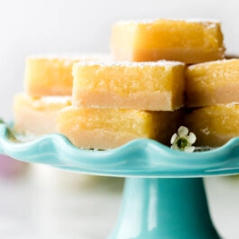

Best Lemon Bars

Easy no-cook custard and a sharp zing of lemon flavor!
These lemon bars are always a hit when I make them- the recipe listed below is originally from Sally's Baking Addiction, but with my own slight edits from making the recipe so many times!
My 'secret' is just adding a ton of lemon zest where the basic recipe calls for none. I usually zest every lemon I use for juice, which is anywhere from 4-8 depending on size / freshness.
Note: This recipe can easily be halved and cooked in an 8x8 or 9x9 pan if you don't need the whole 13x9.
Ingredients
Shortbread Crust
- 1 Cup (230g, or 2 Sticks) Unsalted Butter, Melted
- 1/2 Cup (100g) Granulated Sugar
- 2 Teaspoons Pure Vanilla Extract
- 1/2 Teaspoon Salt
- 2 Cups + 2 Tablespoons (265g) All-Purpose Flour
Lemon Filling
- 2 Cups (400g) Granulated Sugar
- 6 Tablespoons (46g) All-Purpose Flour
- 6 Large Eggs
- 1 Cup (240ml) Lemon Juice (from ~4 lemons)
- Fresh Lemon Zest (from at least 2 lemons, preferably 4)
- Optional: Confectioners Sugar
Steps
- Preheat the oven to 325 degrees F (163C). Line the bottom and sides of a 9x13 baking pan (or 8x8-9x9 if halving) with parchment paper, leaving an overhang on the sides to lift the finished bars out. Set aside.
- Make the crust: Mix the melted butter, sugar, vanilla extract, and salt together in a medium bowl. Add the flour and stir to completely combine. The dough will be thick. Press firmly into prepared pan, making sure the layer of crust is nice and even. Bake for 22-24min or until the edges are lightly browned. Remove from the oven. Using a fork, poke holes all over the top of the warm crust (but not all the way through). Set aside until Step 4.
- Make the filling: Sift the sugar and flour together in a large bowl. Whisk in the eggs, then the lemon juice until completely combined. (Note: This step isn't mandatory, but is strongly encouraged! When I sift I get a much better consistency to the filling and no embarrassing flour pockets.)
- Pour filling over warm crust. Bake the bars for 22-26 minutes or until the center is relatively set and no longer jiggles. (Give the pan a light tap with an oven mitt to test.) Remove bars from the oven and cool completely at room temperature. I usually cool them for about 2 hours at room temperature, then stick in the refrigerator for 1-2 more hours until fully chilled.
- Once fully cooled, lift the bars out of the pan using the parchment overhang. Dust with confectioner's sugar if using, then cut into squares. For neater squares, wipe off the knife between cuts; a cup of hot water helps with this and makes for cleaner/easier cuts!
Notes
- Bars can be stored in the fridge up to one week.
- Bars can be frozen for up to 3-4 months; cut as normal, then freeze on a baking sheet for 1hr. Wrap individually and freeze together in a larger container. Don't dust with sugar until ready to serve.